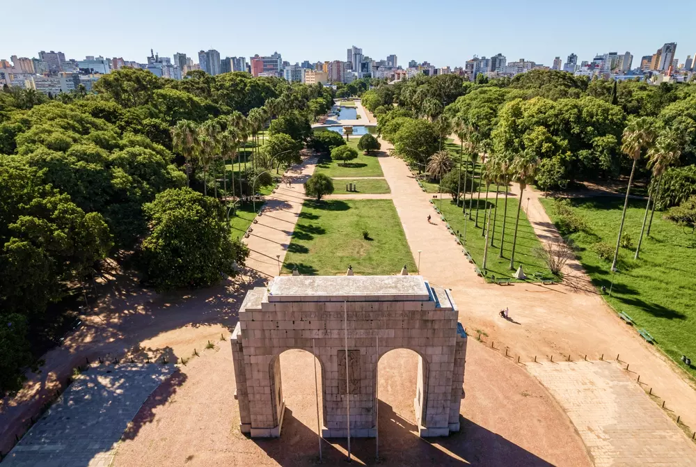
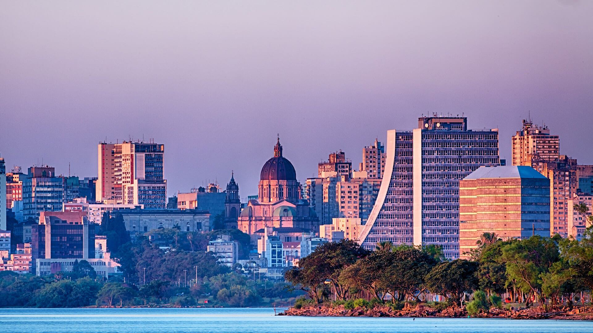

Cultura Gaúcha: Porto Alegre é um verdadeiro celeiro da cultura gaúcha, refletida em suas tradições, música, dança e culinária. A cidade preserva com orgulho as raízes do gauchismo, com festivais de música nativista, churrascarias típicas e centros culturais dedicados à cultura gaúcha.
Patrimônio Arquitetônico: A cidade possui um rico patrimônio arquitetônico, com edifícios históricos que contam a história da região. O Mercado Público, o Theatro São Pedro e a Usina do Gasômetro são exemplos emblemáticos da arquitetura porto-alegrense.
Natureza Preservada: Apesar de ser uma cidade urbanizada, Porto Alegre também é rica em áreas verdes e espaços naturais. O Parque da Redenção, o Parque Marinha do Brasil e o Parque Natural Morro do Osso oferecem refúgios naturais para atividades ao ar livre e contato com a natureza.
Economia Diversificada: Porto Alegre é um importante centro econômico e financeiro da região Sul do Brasil, com uma economia diversificada que abrange setores como indústria, comércio, serviços e tecnologia. A cidade é sede de grandes empresas nacionais e internacionais, contribuindo significativamente para o desenvolvimento econômico da região.
Educação e Cultura: Porto Alegre é reconhecida por sua qualidade na área da educação e cultura. A cidade abriga importantes instituições de ensino superior, como a Universidade Federal do Rio Grande do Sul (UFRGS) e a Pontifícia Universidade Católica do Rio Grande do Sul (PUCRS), além de museus, teatros e centros culturais que promovem a produção artística e intelectual.
Gastronomia Regional: A culinária gaúcha é uma das mais ricas e saborosas do Brasil, e em Porto Alegre é possível saborear uma variedade de pratos típicos, como o churrasco, o arroz de carreteiro, o chimarrão e o famoso churrasco de chão, que celebram a tradição e os sabores da região.
Qualidade de Vida: Porto Alegre é conhecida por oferecer uma excelente qualidade de vida para seus habitantes, com boa infraestrutura urbana, serviços públicos de qualidade, baixos índices de violência e uma forte cultura de bem-estar. A cidade conta com uma rede de parques, ciclovias e espaços de lazer que proporcionam uma vida saudável e equilibrada.
Eventos Culturais e Esportivos: Ao longo do ano, Porto Alegre sedia uma série de eventos culturais e esportivos que movimentam a cidade e atraem visitantes de todo o país. Festivais de música, feiras de gastronomia, corridas de rua e eventos esportivos são algumas das opções de entretenimento que a cidade oferece.
Diversidade étnica e cultural: Porto Alegre é uma cidade multicultural, que abriga uma diversidade de etnias e culturas. Essa mistura de influências se reflete na música, na dança, na gastronomia e nas tradições locais, enriquecendo o cenário cultural da cidade.
Belezas Naturais: Além do rio Guaíba, que empresta sua beleza à cidade, Porto Alegre está cercada por uma paisagem exuberante, com morros, lagos e áreas verdes que proporcionam cenários deslumbrantes e atividades ao ar livre para seus moradores e visitantes.
